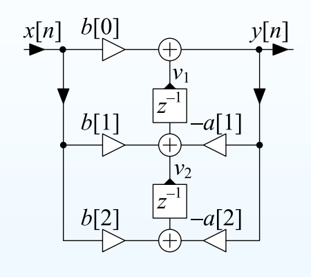
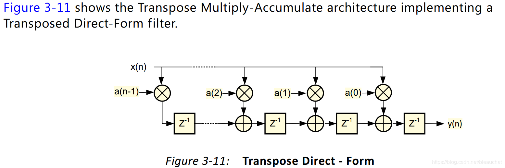

class IIRHilbertDeeper
一种实现了IIR的Hilbert变换的实现，拥有更陡峭的截止和更低的阻带涟漪。

Schroeder allpass filter
将AllpassOrder1中的单位延迟替换为延迟线，可重复全通滤波器的响应。
将AllpassOrder2中的单位延迟替换为延迟线，可重复全通滤波器的响应。
提供了一系列计算模拟滤波器响应的函数，应用于match biquad中匹配滤波器响应。
RBJ的计算公式中提供了一系列截止频率于1rad/s的传递函数，通过将s替换为s/wc可以将传递函数的截止频率设置为wc。
例如一个低通滤波器
\[H(s)=\frac{1}{s^2+\frac{s}{Q}+1}\]
想要计算w角频率，wc截止频率的响应，带入
\[s=\frac{iw}{wc}\]
即可得到结果。
简单的存储了数字biquad的系数, a0被设置为1.
class BiquadCoeff的double版本.
class Biquad
一个转置2型biquad的实现。
namespace qwqdsp_filter:fastset_coeff
包含了一系列快速设置IIR滤波器系数的系数，这些系数是在连续域预先residual计算的。它们是一些级联低通滤波器的并行形式的极点和幅度。
使用时通过脉冲不变法进行离散化。
class FIRDirect
一种直接形式的FIR实现。为了加快计算预先移动并拷贝一个块然后移动系数计算。感觉不如环形缓冲区一根。
class FIRTranspose
一种转置形式的FIR实现。
class Formant ref
存储了一些共振峰的滤波器参数。
static constexpr std::array kTypeNames{
"soprano",
"tenor",
"alto",
"bass",
"countertenor",
};
static constexpr std::array kVowelNames{
"a",
"e",
"i",
"o",
"u",
};
第一层是type，第二层是vowel，每个vowel有5个滤波器。
class GoldRader
一种gold-rader形式的滤波器实现，课本的gold-rader传递函数为
\[H(z)=\frac{z^-1(b0+b1*z^-1+b2*z^-2)}{(z-2Rcos(\omega)+R^2)}\]
这种传递函数会导致R*sinw的衰减，因此默认除以了这个衰减值。这就导致w靠近0时可能发生量化问题。
class StereoIIRHilbertCpx
一种实现了IIR的复数Hilbert变换的实现。
class StereoIIRHilbertDeeperCpx
一种实现了IIR的复数Hilbert变换的实现，拥有更陡峭的截止和更低的阻带涟漪。
class IIRHilbertCpx
一种实现了IIR的复数Hilbert变换的实现。
一个典型的IIR希尔伯特变换器由两组并行全通滤波器组成，有一个实数输入和两个实数输出。如果认为变换器的H(z)=a+bi，复数信号输入是A+Bi，可以将实数和虚数送入两组希尔伯特变换器，只不过我们只需要将虚数的那组再乘以i，并加上实数的那组。
Input = A+Bi, A_IIR = (a+bi)A, B_IIR = (a+bi)B
Output = A_IIR + i * B_IIR = (a+bi)A + i*(a+bi)B = (aA-bB) + i(bA+aB)
设R(x)为希尔伯特实数输出，设I(x)为希尔伯特虚数输出
给定复数输入A+Bi, 因此复数希尔伯特的实数输出是R(A)-I(B)，复数希尔伯特的虚数输出是R(B)+I(A)
class IIRHilbertDeeperCpx
一种实现了IIR的复数Hilbert变换的实现，拥有更陡峭的截止和更低的阻带涟漪。
class IIRHilbert
一种实现了IIR的Hilbert变换的实现。
class IIRHilbertDeeper
一种实现了IIR的Hilbert变换的实现，拥有更陡峭的截止和更低的阻带涟漪。
class IIRHilbertFull ref
一种实现了IIR的Hilbert变换的实现，拥有可设定的极点数量。
class IIRDesign
class IIRDesignExtra